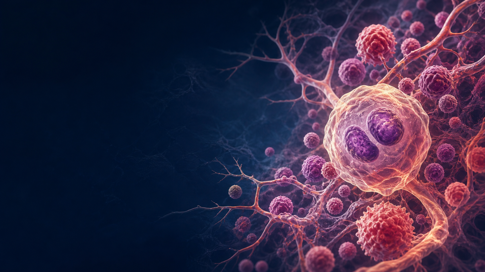
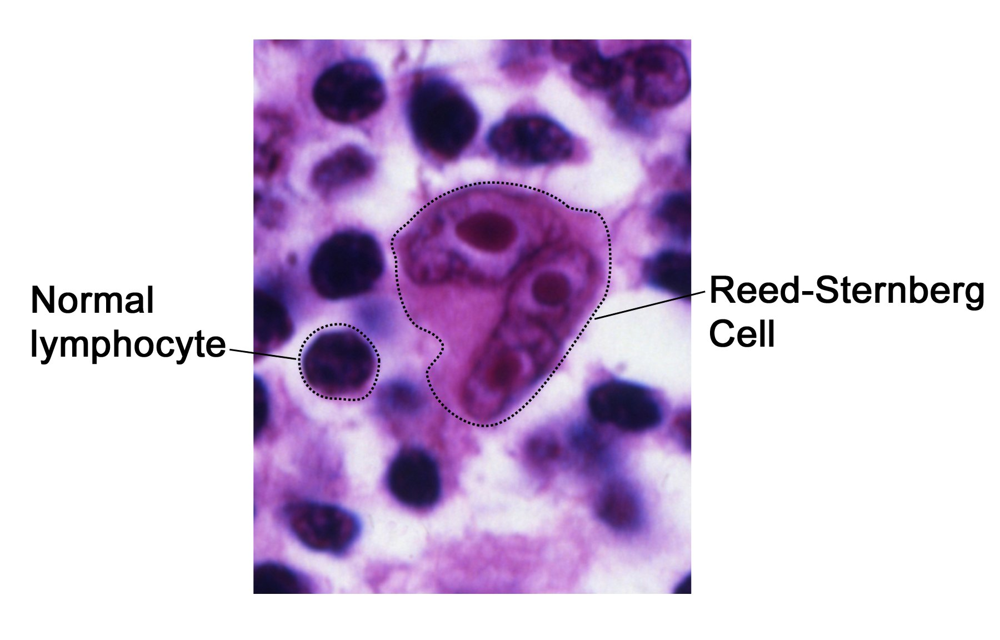
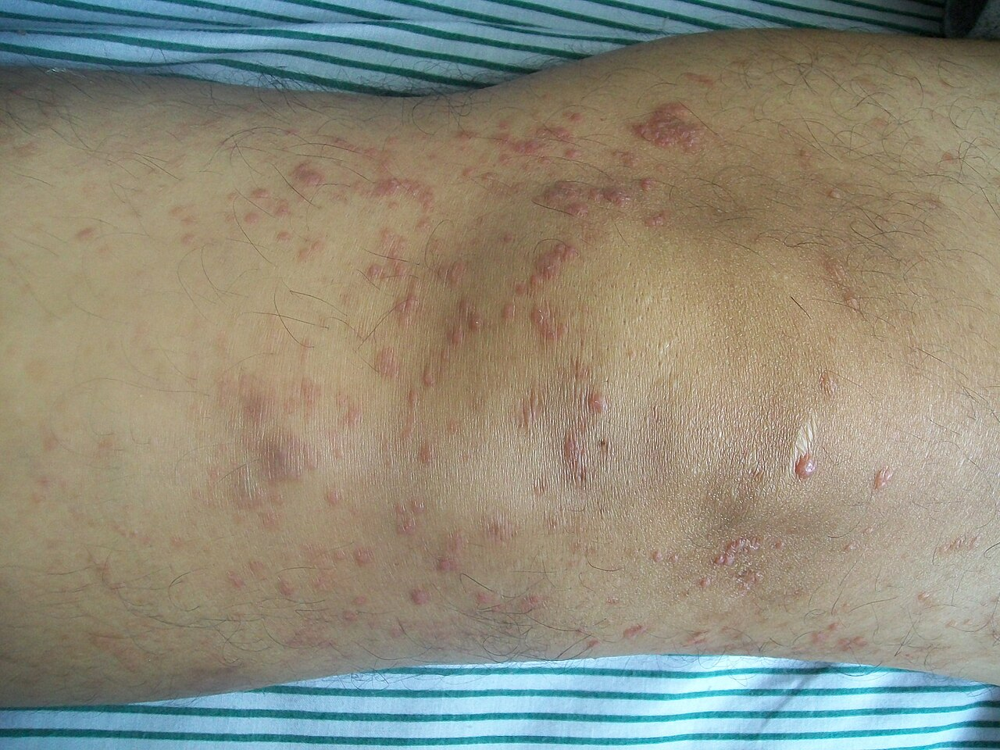
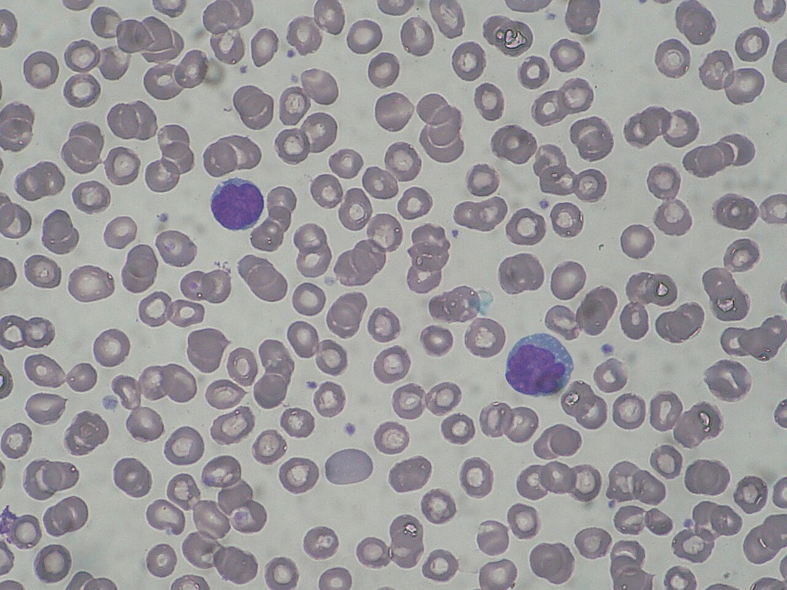

Which distribution best fits?

Hodgkin's and NHL
Theo Couris | HMS | Dr. Sun | W3
CASE RELEVANCE
A patient has drenching night sweats, fever, weight loss, and lower-back pain. A marrow report mentions Auer rods.
What tells us it likely isn't lymphoma?
Hodgkin has a rhythm.
Often a single painless node group, then orderly contiguous spread. Mediastinal disease is a classic clue.
B
- Fever>38°C, unexplained
- Night sweatsdrenching
- Weight loss>10% in 6 months
Why “B”? Ann Arbor staging appends B when any are present; A means absent.

- 01Excisional biopsyArchitecture matters; sample a whole node when feasible.
- 02MorphologyClassic Reed–Sternberg cells in a reactive background.
- 03ImmunophenotypeClassic HL is typically CD15+ · CD30+, with weak/absent B-cell markers.
- 04Stage with PET/CTCBC and chemistry add context; treatment is stage- and risk-adapted.
0 / 8 filled
| Subtype | Frequency | RS variant | Typical presentation | EBV | Prognosis |
|---|---|---|---|---|---|
| Nodular sclerosis | Lacunar | Young adults; mediastinal mass | Rare | ||
| Mixed cellularity | ~20–25% | Older adults; HIV; advanced | Good | ||
| Lymphocyte-rich | ~5% | Few classic RS | Sometimes | ||
| Lymphocyte-depleted | <5% | Numerous pleomorphic RS | Elderly; HIV; advanced |
Classic HL: CD15+ / CD30+. Contrast: nodular lymphocyte-predominant B-cell lymphoma is usually CD20+ / CD45+ and has “popcorn” cells.
NHLs
0 / 6 filled
| Type | Tempo | Signature | High-yield presentation | Management idea |
|---|---|---|---|---|
| Burkitt | Very aggressive | Jaw (endemic) or abdomen (sporadic); “starry sky” | Intensive combination chemotherapy | |
| Follicular | Indolent | Waxing / waning painless nodes | Observe if asymptomatic or anti-CD20–based therapy | |
| Hairy cell | Indolent | Splenomegaly; dry tap; cytopenias | Purine analog when symptomatic | |
| Marginal zone (MALT) | Indolent | Chronic inflammation; gastric H. pylori association | Treat underlying cause first when applicable | |
| Mantle cell | Aggressive | Older men; generalized nodes; GI involvement | Immunochemotherapy ± transplant strategy | |
| DLBCL | Aggressive | Rapidly enlarging mass ± B symptoms | Curative-intent anti-CD20 immunochemotherapy | |
| Anaplastic large cell | Aggressive | CD30+; ALK ± | Nodes or extranodal sites | Systemic therapy; ALK status informs prognosis |
| Peripheral T-cell, NOS | Aggressive | Variable mature T-cell phenotype | Often advanced disease | Systemic combination therapy |
| Adult T-cell leukemia/lymphoma | Aggressive | HTLV-1 | Hypercalcemia; skin + lytic bone lesions | Subtype- and setting-specific systemic therapy |
| Mycosis fungoides | Indolent early | CD4+ cutaneous T cells | Skin patches → plaques → tumors | Skin-directed therapy when limited |
| Sézary syndrome | Aggressive | CD4+ cells in blood; loss of CD7/CD26 | Erythroderma; nodes; palm/sole involvement | Systemic therapy |
T Cell Lymphomas

01 · Skin
Mycosis fungoides
Pruritic patches → plaques → tumors. Epidermotropic CD4+ T cells.
Bobjgalindo, CC BY-SA 4.0 ↗
02 · Blood
Sézary syndrome
Erythroderma + lymphadenopathy + malignant T cells with cerebriform nuclei in blood.
Paulo Mourao, CC BY-SA 3.0 ↗JapanCaribbeanWest Africa
03 · Virus
Adult T-cell leukemia/lymphoma
HTLV-1 · skin lesions · lytic bone lesions · hepatosplenomegaly · ↑LDH · hypercalcemia.
The calcium + bone-lesion pairing can resemble myeloma; the viral and T-cell context separates it.Takeaway
Pattern
Hodgkin: contiguous, mediastinal, bimodal. NHL: diverse, often noncontiguous or extranodal.
Tissue
Biopsy first. Classic Hodgkin: Reed–Sternberg morphology with CD15+ / CD30+. NHL identity follows transposon.
Plan
Stage, subtype, tempo, symptoms, and patient factors drive treatment.